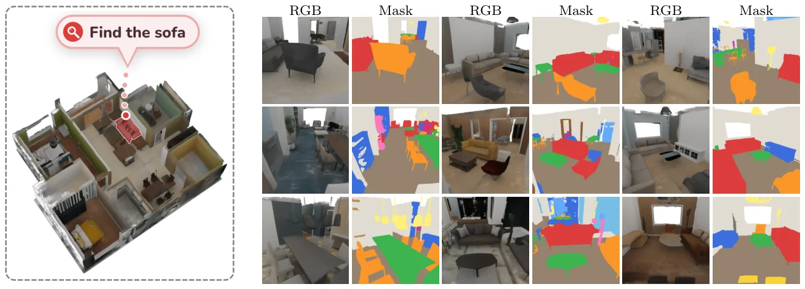
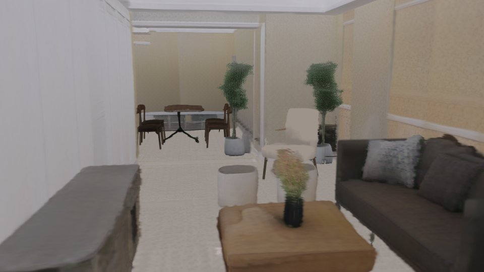

UniGaussianGPT
Composable Autoregressive Semantic 3D Gaussians Modeling
1Nanyang Technological University2Zhejiang University3Monash University
Generate a 3D Gaussian scene and know what every Gaussian is
UniGaussianGPT writes a scene token by token. The transformer state that predicts the next token also predicts the semantic class of the region it has just written, so the generated Gaussians come out labeled, and each piece of furniture can be selected, moved, copied or removed as a whole.

Better labels, better layouts, and hidden surfaces kept
On 480 held-out 4 m chunks. The strongest baseline, SceneSplat, reaches 0.385; all baselines are fine-tuned on our data.
Top-down depth of generated scenes. WorldGrow 97.08, GaussianGPT 104.03; lower is better.
Occluded surfaces that survive tokenization with opacity above 0.15, against 83.32% for the GaussianGPT tokenizer.

Open the consoleWalk into a generated house and edit it
- WalkMove through the house with W A S D, look around by dragging.
- SemanticsShow the class the model predicted for every Gaussian.
- SelectClick the sofa, a chair or a table; it is one labeled, complete piece.
- Move, turnDrag it across the floor, turn it in 15° steps.
- Copy, removeDuplicate it, or take it out: the floor under it is whole.
BibTeX
@article{xie2026unigaussiangpt,
title = {UniGaussianGPT: Composable Autoregressive Semantic 3D Gaussians Modeling},
author = {Xie, Yuchen and Wang, Weijie and Gao, Zihui and Cao, Qihang and
Guo, Jinghao and Chen, Donny Y. and Bian, Jia-Wang},
journal = {arXiv preprint},
year = {2026}
}